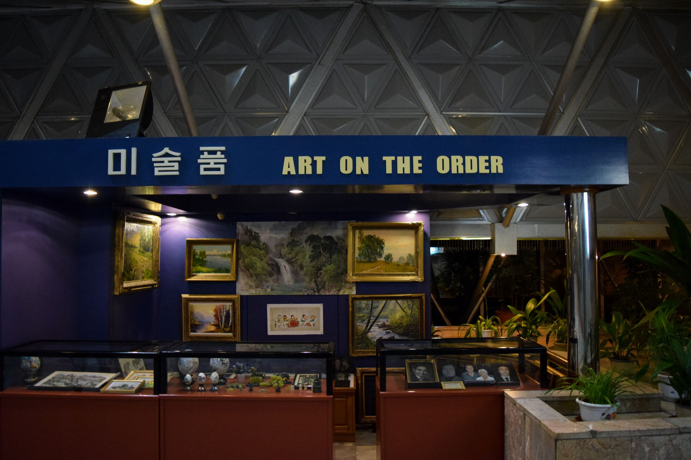
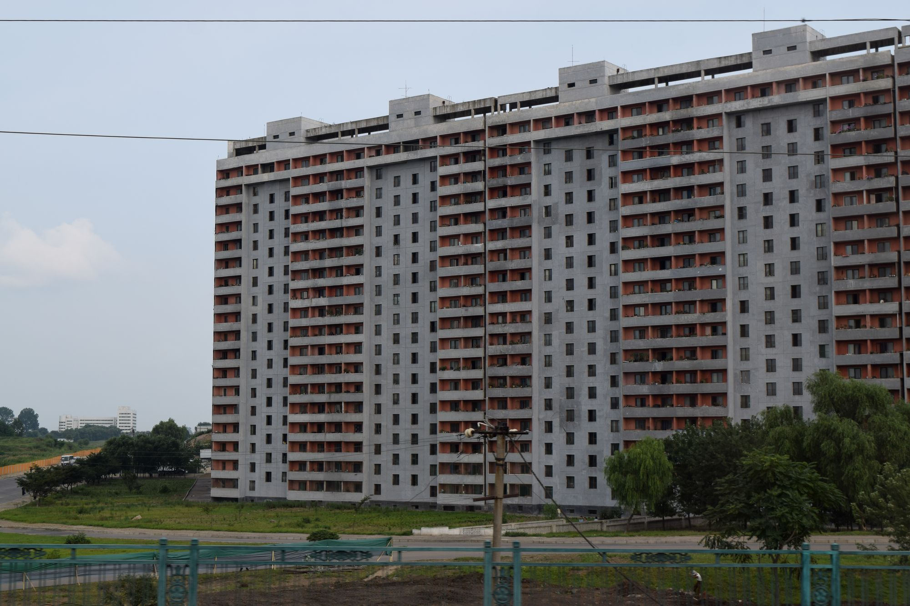

Photos of North Korea
I spent some time in North Korea (DPRK), via a specialist travel agency. I didn't get as many good photos as I would have liked, but below are some of the better ones.








The Monument to Party Founding (당창건기념탑), Pyongyang
I spent some time in North Korea (DPRK), via a specialist travel agency. I didn't get as many good photos as I would have liked, but below are some of the better ones.